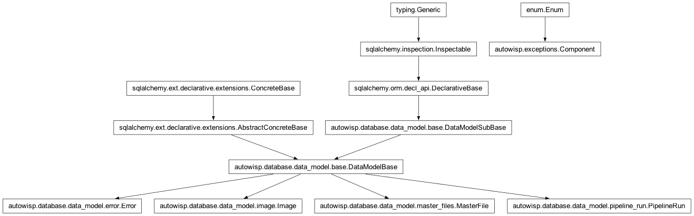

autowisp.error_render module
Class Inheritance Diagram

Human-readable projections of a persisted Error record.
The CLI and BUI never format an exception directly – they render the
persisted Error row (and, on demand, its detail sidecar) through the
functions here, so the two front-ends cannot drift. Rendering is a
projection of the stored record, never of a live exception.
- autowisp.error_render._describe_artifact(error_row, db_session)[source]
Return a short description of the artifact the error is about.
Resolves the row’s artifact FK to a path; falls back to the bare id if the artifact row is gone, and to
Nonewhen no artifact is linked.
- autowisp.error_render._run_provenance(error_row, db_session)[source]
Return
{host, process_id, code_version}for the error’s run.Empty dict when the error has no pipeline run (standalone CLI/BUI) or the run row is gone.
- autowisp.error_render.error_count(db_session=None)[source]
Return the number of open (unresolved) errors.
This is what the error badge shows – resolved errors are kept as history but no longer counted.
- Parameters:
db_session – Optional active session; one is opened if omitted.
- Returns:
The open-error count (0 if none).
- Return type:
- autowisp.error_render.error_counts_by_step(db_session=None)[source]
Return
{step_name: count}for open errors that name a step.Powers the per-step markers on the progress grid; resolved errors and errors with no step (pipeline/BUI) are excluded.
- Parameters:
db_session – Optional active session; one is opened if omitted.
- Returns:
Mapping of step name to its open-error count.
- Return type:
- autowisp.error_render.error_detail(error_row, db_session=None, *, developer=False)[source]
Return the full human view of an error row as a dict.
Lazily loads the sidecar. With
developer=Falsethe result holds the user-facing fields (summary, message, artifact, and remediation if the error provided one). Withdeveloper=Trueit adds the technical fields: exception class, full message, traceback, details,subprocess_id, the run’s host/PID/code_version, and the related-file list. A missing sidecar degrades gracefully (the sidecar-backed fields are simply absent / empty).
- autowisp.error_render.error_list_rows(db_session=None, *, pipeline_run_id=None, step_name=None)[source]
Return the rows for a list view, newest first, from inline columns.
Reads only the queryable columns – never a sidecar – so a list view stays cheap regardless of how many errors there are.
- Parameters:
- Returns:
- One dict per error with
id,created, component,step_name,artifact,user_message, and a one-linesummary, ordered newest first.
- One dict per error with
- Return type:
- autowisp.error_render.error_summary(error_row, db_session=None)[source]
Return a one-line human summary of an error row.
Format:
[component:step] <artifact>: <user_message>(the artifact clause is omitted when none is linked).
- autowisp.error_render.format_detail_text(detail)[source]
Render an
error_detail()dict as plain text for a terminal.Keeps all formatting in this module (the front-ends never format fields themselves). Only the keys present in
detailare shown, so the same function serves both the user and developer views.- Parameters:
detail (dict) – The result of
error_detail().- Returns:
A multi-line, human-readable rendering.
- Return type:
- autowisp.error_render.open_error_count_for_steps(step_names, db_session=None)[source]
Return how many open errors would gate launching
step_names.Counts open errors that bear on running the pipeline:
every open pipeline error (an orchestration/config failure is run-level, so it gates any launch until resolved), and
open step errors for the steps about to run (all steps for a full run, i.e. an empty
step_names).
Open BUI errors are excluded – they are web-interface issues, not a reason to hold back processing. Used by the start-processing gate.
- Parameters:
step_names (iterable) – Step names about to be run; empty means a full run (every step).
db_session – Optional active session; one is opened if omitted.
- Returns:
The number of open errors relevant to the launch.
- Return type: